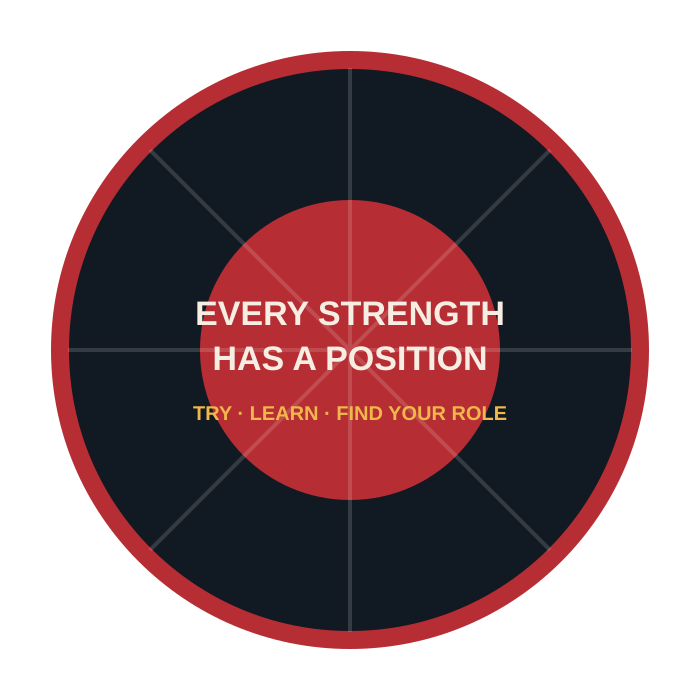

U18 training camp
Three days of preparation at Kungsängens IP before Dukes Tourney.
American football in Dalarna
A team for young players, adults, complete beginners and returning athletes in Falun, Borlänge and across Dalarna.
No experience required · Beginners welcome · Ask about equipment for your first practice

Rebels right now
Dalecarlia Rebels players are building a national U18 season together with Upplands-Bro Broncos.
Three days of preparation at Kungsängens IP before Dukes Tourney.
Sweden’s largest youth American football tournament at Lillegårdens IP in Skövde.
The combined squad begins its league season away against Örebro Black Knights.
Schedule information follows the official Upplands-Bro Broncos U18 calendar and may change. Check the current team calendar ↗
Never played before?
American football is one of the few sports where different body types, abilities and personalities all matter. Speed has a position. Strength has a position. Strategy has a position. Commitment has a position.
See what your first practice looks like →
Find your role
Explore possible positions based on your strengths, then try different roles with the coaches. The position finder is an introduction—not a test.
Open the position finderClub news
Club news
Falu Energi & Vatten selected Dalecarlia Rebels as one of the local associations it supports in 2026.
Read the official announcement ↗Youth football
The clubs are combining players and coaching experience for the 2026 national U18 season.
Read the team update ↗Recruitment
People of all ages tried American football at Kvarnsvedens IP with no previous experience required.
Follow future Rookie Days ↗The Rebel story
From earlier clubs and the founding of the Rebels in 2012 to today’s renewed youth development, the club exists to keep American football alive in the region.
Read the story“The next part of the story has not been written yet.”Become part of it →
Partners
Support youth equipment, safe facilities, coaching, travel and opportunities across Dalarna.